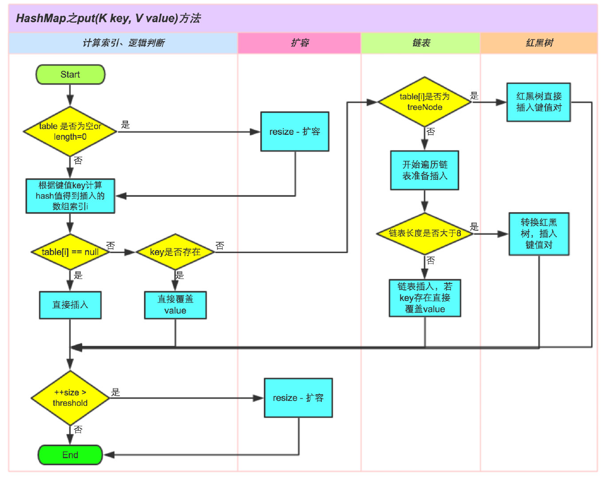

除了List集合外，HashMap也是我们日常开发中经常使用的key-value容器，并且也是面试过程中经常会问到的知识点，本文也将对HashMap、TreeMap、LinkedHashMap、ConcurrentHashMap等进行深入分析。
HashMap

参考
问题引导
由于知识点太多，我就以自己搜集到的面试常问的有关于HashMap的问题进行解决，然后再进一步深挖！
- HashMap的底层数据结构？
- HashMap的主要方法？
- HashMap 是如何确定元素存储位置的以及如何处理哈希冲突的？
- HashMap 扩容机制是怎样的？
- JDK 1.8 在扩容和解决哈希冲突上对 HashMap 源码做了哪些改动？有什么好处?
- 什么时候会使用HashMap？他有什么特点？
- 你知道HashMap的工作原理吗？
- 你知道get和put的原理吗？equals()和hashCode()都有什么作用？
- 你知道hash的实现吗？为什么要这样实现？
- 如果HashMap的大小超过了负载因子（load factor）定义的容量，怎么办？
- 你了解重新调整HashMap大小存在什么问题吗？
- 为什么使用String，Interger这样的wrapper类适合作为键？
- 我们可以使用自定义的对象作为键吗？
- 如何对HashMap进行排序？
- HashMap的删除陷阱？
- 为什么只允许通过iterator进行删除操作？
- 如果是遍历过程中增加或修改数据呢？
- hashmap为什么初始长度为16？
- HashMap中的扰动函数是什么，有什么作用，TreeMap中有吗？
- HashMap为何可以插入空值？为什么它是线程不安全的？
这20个问题的参考想法会在文章末尾给出！先一起来学习一哈HashMap的源码！
概述
- HashMap的特性
- HashMap的存储结构
- HashMap的重要方法—增删改查
- HashMap的扩容机制
- HashMap的迭代器
- HashMap的Fail-Fast机制
- HashMap与大家庭中其他Map的区别
接下来从这些方面拿下HashMap！！！
HashMap的特性
- 它根据键的 hashCode值 存储数据，大多数情况下可以直接定位到它的值，因而具有很快的访问速度，但遍历顺序却是不确定的。[只是说跟hashCode的值有关系哦！并不是直接按照hashCode()返回值存取的]
- HashMap最多只允许一条记录的键为null，允许多条记录的值为null。
- HashMap 非线程安全，即任一时刻可以有多个线程同时写HashMap，可能会导致数据的不一致。如果需要满足线程安全，可以用 Collections 的 synchronizedMap 方法使 HashMap 具有线程安全的能力，或者使用ConcurrentHashMap。
- 键唯一，如果键相同，则值会被覆盖。同时若键为自定义的数据类型，则需要保证已经重写了equals() 和 hashCode()。 ——> equals() 和 hashCode()详解
HashMap的存储结构
JDK 1.7 版本的HashMap是以 数组 + 链表 存储的，也就是我们常说的按 链地址法 存储
常见的处理哈希冲突的方法就两种：
开放地址法
开放地址法又可以分为线性探测法、平方探测法、再散列法
拉链法
JDK 1.8 版本的HashMap是以 数组 + 链表 + 红黑树 实现的，红黑树 可能大家接触的不是很多，所以我赶紧学习了一波 传送门，具体的实现如下图所示：

源码中的相关概念
重要参数
- 哈希桶（buckets）：在 HashMap 的注释里使用哈希桶来形象的表示数组中每个地址位置。注意这里并不是数组本身，数组是装哈希桶的，他可以被称为哈希表。
- 初始容量(initial capacity) : 这个很容易理解，就是哈希表中哈希桶初始的数量。如果我们没有通过构造方法修改这个容量值默认为
DEFAULT_INITIAL_CAPACITY = 1<<4即16。值得注意的是为了保证 HashMap 添加和查找的高效性，HashMap的容量总是 2^n 的形式，下文会讲为什么 HashMap 的容量总是 2^n次方。 - 加载因子(load factor)：加载因子是哈希表（散列表）在其容量自动增加之前被允许获得的最大数量的度量。当哈希表中的条目数量超过负载因子和当前容量的乘积时，散列表就会被重新映射（即重建内部数据结构），重新创建的散列表容量大约是之前散列表哈系统桶数量的两倍。默认加载因子（0.75）在时间和空间成本之间提供了良好的折衷。加载因子过大会导致很容易链表过长，加载因子很小又容易导致频繁的扩容。所以不要轻易试着去改变这个默认值。
- 扩容阈值（threshold）：其实在说加载因子的时候已经提到了扩容阈值了，扩容阈值 = 哈希表容量 * 加载因子。哈希表的键值对总数 = 所有哈希桶中所有链表节点数的加和，扩容阈值比较的是是键值对的个数而不是哈希表的数组中有多少个位置被占了。
- 树化阀值(TREEIFY_THRESHOLD) ：这个参数概念是在 JDK1.8后加入的，它的含义代表一个哈希桶中的节点个数大于该值（默认为8）的时候将会被转为红黑树行存储结构。
- **非树化阀值(UNTREEIFY_THRESHOLD)**： 与树化阈值相对应，表示当一个已经转化为数形存储结构的哈希桶中节点数量小于该值（默认为 6）的时候将再次改为单链表的格式存储。导致这种操作的原因可能有删除节点或者扩容。
- 最小树化容量(MIN_TREEIFY_CAPACITY): 经过上边的介绍我们只知道，当链表的节点数超过8的时候就会转化为树化存储，其实对于转化还有一个要求就是哈希表的数量超过最小树化容量的要求（默认要求是 64）,且为了避免进行扩容、树形化选择的冲突，这个值不能小于 4 * TREEIFY_THRESHOLD);在达到该要求之前优先选择扩容。扩容因为因为容量的变化可能会使单链表的长度改变。
与这个几个概念对应的在 HashMap 中几个常亮量，由于上边的介绍比较详细了，下边仅列出几个变量的声明：
1 | /*默认初始容量*/ |
对应的还有几个全局变量：
1 | // 扩容阈值 = 容量 x 加载因子 |
作者：像一只狗
链接：https://juejin.im/post/5ac83fa35188255c5668afd0
来源：掘金
基本存储单元
Node
1 | /** |
TreeNode
1 | /** |
重要方法
确定哈希桶数组索引位置
不管增加、删除、查找键值对，定位到哈希桶数组的位置都是很关键的第一步。前面说过HashMap的数据结构是数组和链表的结合，所以我们当然希望这个HashMap里面的元素位置尽量分布均匀些，尽量使得每个位置上的元素数量只有一个，那么当我们用hash算法求得这个位置的时候，马上就可以知道对应位置的元素就是我们要的，不用遍历链表，大大优化了查询的效率。HashMap定位数组索引位置，直接决定了hash方法的离散性能。先看看源码的实现(方法一+方法二):
1 | //方法一：称为扰动函数 |
这里的Hash算法本质上就是三步：取key的hashCode值、高位运算、取模运算。
对于任意给定的对象，只要它的hashCode()返回值相同，那么程序调用方法一所计算得到的Hash码值总是相同的。我们首先想到的就是把hash值对数组长度取模运算，这样一来，元素的分布相对来说是比较均匀的。但是，模运算的消耗还是比较大的，在HashMap中是这样做的：调用方法二来计算该对象应该保存在table数组的哪个索引处。
这个方法非常巧妙，它通过h & (table.length -1)来得到该对象的保存位，而HashMap底层数组的长度总是2的n次方，这是HashMap在速度上的优化。当length总是2的n次方时，h& (length-1)运算等价于对length取模，也就是h%length，但是&比%具有更高的效率。
在JDK1.8的实现中，优化了高位运算的算法，通过hashCode()的高16位异或低16位实现的：(h = k.hashCode()) ^ (h >>> 16)，主要是从速度、功效、质量来考虑的，这么做可以在数组table的length比较小的时候，也能保证考虑到高低Bit都参与到Hash的计算中，同时不会有太大的开销。
下面举例说明下，n为table的长度。

Put方法(新增)
- ① 判断键值对数组table[i]是否为空或为null，否则执行resize()进行扩容；
- ② 根据键值key计算hash值得到插入的数组索引i，如果table[i]==null，直接新建节点添加，转向⑥，如果table[i]不为空，转向③；
- ③ 判断table[i]的首个元素是否和key一样，如果相同直接覆盖value，否则转向④，这里的相同指的是hashCode以及equals；
- ④ 判断table[i] 是否为treeNode，即table[i] 是否是红黑树，如果是红黑树，则直接在树中插入键值对，否则转向⑤；
- ⑤ 遍历table[i]，判断链表长度是否大于8，大于8的话，进入到 treeifyBin()，会先去判断当前哈希桶大小是不是到了 MIN_TREEIFY_CAPACITY （默认是 64），如果没有就直接扩容，如果到了64（≥64），就把链表转换为红黑树，在红黑树中执行插入操作，否则进行链表的插入操作；遍历过程中若发现key已经存在直接覆盖value即可；
- ⑥ 插入成功后，判断实际存在的键值对数量size是否超多了最大容量threshold，如果超过，进行扩容。
1 | public V put(K key, V value) { |
resize方法(扩容)
整体分为两部分：1. 寻找扩容后数组的大小以及新的扩容阈值，2. 将原有哈希表拷贝到新的哈希表中。
我们分析下resize的源码，鉴于JDK1.8融入了红黑树，较复杂，为了便于理解我们仍然使用JDK1.7的代码，好理解一些，本质上区别不大，具体区别后文再说。
1 | void resize(int newCapacity) { //传入新的容量 |
这里就是使用一个容量更大的数组来代替已有的容量小的数组，transfer()方法将原有Entry数组的元素拷贝到新的Entry数组里。
1 | void transfer(Entry[] newTable) { |
newTable[i]的引用赋给了e.next，也就是使用了单链表的头插入方式，同一位置上新元素总会被放在链表的头部位置；这样先放在一个索引上的元素终会被放到Entry链的尾部(如果发生了hash冲突的话），这一点和Jdk1.8有区别，下文详解。在旧数组中同一条Entry链上的元素，通过重新计算索引位置后，有可能被放到了新数组的不同位置上。
下面举个例子说明下扩容过程。假设了我们的hash算法就是简单的用key mod 一下表的大小（也就是数组的长度）。其中的哈希桶数组table的size=2， 所以key = 3、7、5，put顺序依次为 5、7、3。在mod 2以后都冲突在table[1]这里了。这里假设负载因子 loadFactor=1，即当键值对的实际大小size 大于 table的实际大小时进行扩容。接下来的三个步骤是哈希桶数组 resize成4，然后所有的Node重新rehash的过程。

下面我们讲解下JDK1.8做了哪些优化。经过观测可以发现，我们使用的是2次幂的扩展(指长度扩为原来2倍)，所以，元素的位置要么是在原位置，要么是在原位置再移动2次幂的位置。看下图可以明白这句话的意思，n为table的长度，图（a）表示扩容前的key1和key2两种key确定索引位置的示例，图（b）表示扩容后key1和key2两种key确定索引位置的示例，其中hash1是key1对应的哈希与高位运算结果。

元素在重新计算hash之后，因为n变为2倍，那么n-1的mask范围在高位多1bit(红色)，因此新的index就会发生这样的变化：

因此，我们在扩充HashMap的时候，不需要像JDK1.7的实现那样重新计算hash，只需要看看原来的hash值新增的那个bit是1还是0就好了，是0的话索引没变，是1的话索引变成“原索引+oldCap”。
这个设计确实非常的巧妙，既省去了重新计算hash值的时间，而且同时，由于新增的1bit是0还是1可以认为是随机的，因此resize的过程，均匀的把之前的冲突的节点分散到新的bucket了。有一点注意区别，JDK1.7中rehash的时候，旧链表迁移新链表的时候，如果在新表的数组索引位置相同，则链表元素会倒置，但是从上图可以看出，JDK1.8不会倒置。
1 | /** |
所以说，JDK 1.8之后扩容的改进有：
- 链表上的节点是尾插法，先来的放到数组中，后来的放到链表中，先到先出，类似于栈。
- JDK 1.8 不像 JDK1.7中会重新计算每个节点在新哈希表中的位置，而是通过
(e.hash & oldCap) == 0是否等于0 就可以得出原来链表中的节点在新哈希表的位置。无需重新计算Hash，节省了时间，新索引=原索引+原容量 - HashMap 在 1.7的时候扩容后，链表的节点顺序会倒置，1.8则不会出现这种情况。因为1.7是后进先出，1.8是先进先出。
treeifyBin方法(树化方法)
get方法(查询)
remove方法(删除)
HashMap 没有 set 方法，如果想要修改对应 key 映射的 Value ，只需要再次调用 put 方法就可以了。我们来看下如何移除 HashMap 中对应的节点的方法：
1 | public V remove(Object key) { |
这里有两个参数需要我们提起注意：
- matchValue 如果这个值为 true 则表示只有当 Value 与第三个参数 Value 相同的时候才删除节点
- movable 这个参数在红黑树中先删除节点时候使用 true 表示删除并其他数中的节点
1 | copy final Node<K,V> removeNode(int hash, Object key, Object value, |
迭代
Map 是没有迭代器的，需要转成 Set 操作
1 | Map map = new HashMap(); |
要强调的是，无论哪种迭代器都是通过遍历 table 表来获取下个节点，来遍历的，遍历过程可以理解为一种深度优先遍历，即优先遍历链表节点（或者红黑树），然后在遍历其他数组位置。
Fail-Fast
当使用迭代器的过程中有其他线程修改了map，并且不是使用迭代器修改的，将引发ConcurrentModificationException
1 | //修改计数 put、remove或clear时mount++ clear时清空 |
与HashTable的区别
-
HashMap是线程不安全的，HashTable是线程安全的。 -
HashMap允许 key 和 Vale 是 null，但是只允许一个 key 为 null,且这个元素存放在哈希表 0 角标位置。HashTable不允许key、value 是 null。 -
HashMap内部使用hash(Object key)扰动函数对 key 的hashCode进行扰动后作为hash值。HashTable是直接使用 key 的hashCode()返回值作为 hash 值。 -
HashMap默认容量为 2^4 且容量一定是 2^n ;HashTable默认容量是11,不一定是 2^n。 -
HashTable取哈希桶下标是直接用模运算,扩容时新容量是原来的2倍+1。HashMap在扩容的时候是原来的两倍，且哈希桶的下标使用 &运算代替了取模。 -
Hashtable是Dictionary的子类同时也实现了Map接口，HashMap是Map接口的一个实现类。
面试题答案
- HashMap的底层数据结构？
数组 + 链表 + 红黑树
- HashMap的主要方法？
put()、resize()、treeifyBin()、get()、remove()等等
- HashMap 是如何确定元素存储位置的以及如何处理哈希冲突的？
是通过hashcode和扰乱函数确定的，先计算好key的hashCode,然后将hashCode的低16位和高16位进行相异或，异或完成后再进行取模(其实也就是与容量-1进行相与[有0则全为0，全1才为1])。一句话总结就是：
取key的hashCode值、高位运算、取模运算
- HashMap 扩容机制是怎样的？
先判断是否超过了整数型的最大值，如果没有，再判断是否已经超过了扩容阈值，如果超过了，则直接扩容两倍，扩容的数量都是2的n次方，HashMap都是优先扩容的，然后其次才是树化等等。
总的来说分为两步：
1. 寻找扩容后数组的大小以及新的扩容阈值，2. 将原有哈希表拷贝到新的哈希表中。
JDK 1.8 在扩容和解决哈希冲突上对 HashMap 源码做了哪些改动？有什么好处?
- 在扩容方面，由于是选用了2的n次方作为桶的数量，所以在取模的时候就非常方便了，直接看hashCode的前一位是1或者0就可以判断在扩容后的新位置，无需重新取模运算；
- HashMap 在 1.7的时候扩容后，链表的节点顺序会倒置，1.8则不会出现这种情况。因为1.7是后进先出，1.8是先进先出。1.7是头插法，1.8是尾插法；
- JDK1.8用& (length-1) 代替了取模运算
- 什么时候会使用HashMap？他有什么特点？
基于Map接口实现的Key-Value容器，允许为空值，同时非有序，线程不安全，非同步。
- 你知道HashMap的工作原理吗？
经过HashCode和扰乱函数，得到相应的索引位置，然后插入，如果非空直接插入即可，如果是有数据，则判断是链表还是红黑树，如果链表超过8则先判断是否需要扩容，如果不需要就将链表变成红黑树！
- 你知道get和put的原理吗？equals()和hashCode()都有什么作用？
通过对key的**hashCode()进行哈希处理，并计算下标（n-1＆hash），从而获得存储桶的位置。如果产生碰撞，则利用key.equals()**方法去链表或树中去查找对应的队列。
- 你知道hash的实现吗？为什么要这样实现？
在Java 1.8的实现中，是通过hashCode（）的高16位异或低16位实现的：（h = k.hashCode（））^（h >>> 16），主要是从速度，效益，质量来考虑的，这样做可以在bucket的n比较小的时候，也能保证考虑到高低位都参与到hash的计算中，同时不会有太大的开销。
- 你了解重新调整HashMap大小存在什么问题吗？
- 当数据过多时，很可能出现性能下降（包括rehash时间）
多线程情况下可能产生条件竞争竞争从而造成死循环（具体表现在CPU接近100％)
- 为什么String, Interger这样的wrapper类适合作为键？
- class具有final属性，同时重写equals()和hashCode()
- hashCode变动会导致读取失效
- final同时保证线程安全
对象推荐重写equals和hashCode方法，主要用于Map存取时的对比，同时有利于减少碰撞
- .我们可以使用自定义的对象作为键吗？
- 这是前一个问题的延伸。当然你可能使用任何对象作为键，只要它遵守了equals()和hashCode()方法的定义规则，并且当对象插入到Map中之后将不会再改变了。如果这个自定义对象时不可变的，那么它已经满足了作为键的条件，因为当它创建之后就已经不能改变了
- 典型实例就是ThreadLocal，读者可参见笔者的 并发番@ThreadLocal一文通（1.7版）
- HashMap的remove陷阱？
- 通过Iterator方式可正确遍历完成remove操作
- 直接调用list的remove方法就会抛异常
- 为什么只允许通过iterator进行remove操作？
- HashMap和keySet的remove方法都可以通过传递key参数删除任意的元素
- 而iterator只能删除当前元素(current)，一旦删除的元素是iterator对象中next所正在引用的，如果没有通过modCount、 expectedModCount的比较实现快速失败抛出异常，下次循环该元素将成为current指向，此时iterator就遍历了一个已移除的过期数据
- 之所以推荐迭代器remove的根本原因在于只有迭代器的remove方法中实现了变更时于modCount的同步工作
expectedModCount = modCount;
- 如果是遍历过程中增加或修改数据呢？
增加或修改数据只能通过Map的put方法实现，在遍历过程中修改数据可以，但如果增加新key就会在下次循环时抛异常，因为在添加新key时modCount也会自增(迭代器只实现了remove方法也是原因之一)
- 有什么方法可以减少碰撞？
扰动函数可以减少碰撞
原理是如果两个不相等的对象返回不同的 hashcode 的话，那么碰撞的几率就会小些。这就意味着存链表结构减小，这样取值的话就不会频繁调用 equal 方法，从而提高 HashMap 的性能（扰动即 Hash 方法内部的算法实现，目的是让不同对象返回不同hashcode）。
使用不可变的、声明作 final 对象，并且采用合适的 equals() 和 hashCode() 方法，将会减少碰撞的发生
不可变性使得能够缓存不同键的 hashcode，这将提高整个获取对象的速度，使用 String、Integer 这样的 wrapper 类作为键是非常好的选择。
- HashMap为什么线程不安全的？
- Put时多线程操作可能导致数据不一致
- Get时可能会因为扩容导致死循环（cpu为100%）
- put非null元素后get出来的却是null 并发安全问题之HashMap
- 可以使用CocurrentHashMap 来代替 Hashtable 吗？
- 我们知道 Hashtable 是 synchronized 的，但是 ConcurrentHashMap 同步性能更好，因为它仅仅根据同步级别对 map 的一部分进行上锁。
- ConcurrentHashMap 当然可以代替 HashTable，但是 HashTable 提供更强的线程安全性
- 它们都可以用于多线程的环境，但是当 Hashtable 的大小增加到一定的时候，性能会急剧下降，因为迭代时需要被锁定很长的时间。 由于 ConcurrentHashMap 引入了分割（segmentation），不论它变得多么大，仅仅需要锁定 Map 的某个部分，其它的线程不需要等到迭代完成才能访问 Map。 简而言之，在迭代的过程中，ConcurrentHashMap 仅仅锁定 Map 的某个部分，而 Hashtable 则会锁定整个 Map。
贴一个复习时可以看的问答
TreeMap
接下来我们一起来分析一波 TreeMap ！！！
参考
问题引导
- 如何决定使用 HashMap 还是 TreeMap？
- TreeMap的特点
概述

- TreeMap 底层基于
红黑树实现 - 该集合最重要的特点就是可排序，该映射根据其键的自然顺序进行排序，或者根据创建映射时提供的 Comparator 进行排序，具体取决于使用的构造方法。
- TreeMap 继承了 AbstractMap，同时实现了 NavigableMap (导航 map )，而 NavigableMap 则是继承了 SortedMap ,而 SortedMap 和 AbstractMap 则是实现了 Map 接口。
- NavigableMap 接口，NavigableMap 接口声明了一些列具有导航功能的方法，通过这些导航方法，我们可以快速定位到目标的 key 或 Entry。比如：
源码分析
JDK 1.8中的TreeMap源码有两千多行，还是比较多的。TreeMap实现的核心部分是关于红黑树的实现，其绝大部分的方法基本都是对底层红黑树增、删、查操作的一个封装。如简介一节所说，只要弄懂了红黑树原理，TreeMap 就没什么秘密了。关于红黑树的原理，请参考本人的另一篇文章 红黑树详细分析。
查找
TreeMap基于红黑树实现，而红黑树是一种自平衡二叉查找树，所以 TreeMap 的查找操作流程和二叉查找树一致。二叉树的查找流程是这样的，先将目标值和根节点的值进行比较，如果目标值小于根节点的值，则再和根节点的左孩子进行比较。如果目标值大于根节点的值，则继续和根节点的右孩子比较。在查找过程中，如果目标值和二叉树中的某个节点值相等，则返回 true，否则返回 false。TreeMap 查找和此类似，只不过在 TreeMap 中，节点（Entry）存储的是键值对。在查找过程中，比较的是键的大小，返回的是值，如果没找到，则返回null。TreeMap 中的查找方法是get，具体实现在getEntry方法中，相关源码如下：
1 | public V get(Object key) { |
遍历
- Iterator 顺序遍历
1 | TreeMap map = new TreeMap(); |
- foreach 遍历
1 | //遍历Map 第二种方式 |
从上面代码片段中可以看出，大家一般都是对 TreeMap 的 key 集合或 Entry 集合进行遍历。上面代码片段中用 foreach 遍历 entrySet 方法产生的集合，在编译时会转换成用迭代器遍历，等价于：
1 | Set entry = map.entrySet(); |
另一方面，TreeMap 有一个特性，即可以保证键的有序性，默认是正序。所以在遍历过程中，大家会发现 TreeMap 会从小到大输出键的值。那么，接下来就来分析一下keySet方法，以及在遍历 keySet 方法产生的集合时，TreeMap 是如何保证键的有序性的。相关代码如下：
1 | public Set<K> keySet() { |
上面的代码比较多，keySet 涉及的代码还是比较多的，大家可以从上往下看。从上面源码可以看出 keySet 方法返回的是KeySet类的对象。这个类实现了Iterable接口，可以返回一个迭代器。该迭代器的具体实现是KeyIterator，而 KeyIterator 类的核心逻辑是在PrivateEntryIterator中实现的。上面的代码虽多，但核心代码还是 KeySet 类和 PrivateEntryIterator 类的 nextEntry方法。KeySet 类就是一个集合，这里不分析了。而 nextEntry 方法比较重要，下面简单分析一下。
在初始化 KeyIterator 时，会将 TreeMap 中包含最小键的 Entry 传给 PrivateEntryIterator。当调用 nextEntry 方法时，通过调用 successor 方法找到当前 entry 的后继，并让 next 指向后继，最后返回当前的 entry。通过这种方式即可实现按正序返回键值的的逻辑。
插入与删除
其实就是红黑树的插入和删除，具体红黑树的插入和删除见我另写的红黑树文章。
TreeMap在删除的时候，采用的也是找后继节点。
自定义比较器
- 在实体类对象中实现Comparable接口并实现了compareTo()方法【String，Integer对象就是此种方式】
1 | class TreeMap2_Comparable { |
- 写一个类实现java.util.Comparator接口(注意这里是Comparator，上面是Comparable)，并将该类对象传递给TreeMap的构造方法。这种方式将实体类和比较机制解耦合，可以写很多个不同的比较器对象。
1 | class TreeMap2_Comparator{ |
- 不写比较器类，而是使用匿名内部类的形式来写比较器
1 | class TreeMap2_InnerComparator { |
HashMap 和 TreeMap 有迭代器吗？
keySet()和entrySet()方法，在将HashMap的时候已经讲过了，Map没有迭代器，要将Map转化为Set，用Set的迭代器才能进行元素迭代。
如何决定使用 HashMap 还是 TreeMap？
都是非线程安全的，如果你需要得到一个有序的结果时就应该使用TreeMap（因为HashMap中元素的排列顺序是不固定的）。除此之外，由于HashMap有更好的性能，故大多不需要排序的时候我们会使用HashMap。
TreeMap的特点？
非线程安全，可排序，正常情况下不允许重复(默认没有重写比较器)，底层采用的是红黑树。因为其非线程安全，故可以允许null值，这个跟HashMap、ArrayList、LinkedList是一样的。
Map 的 key 值都是不可以重复的，故 Set 与 List 最大的区别就是一个数据不可重复，一个是可以重复的。
HashMap、TreeMap、ConcurrentHashMap、HashTable、ArrayDeque、ArrayList、LinkedList、Vector线程安全问题以及 key、value 是否能为空？
| 集合类型 | 是否线程安全 | key、value是否可以为空 | 原因 |
|---|---|---|---|
| HashMap | 否 | key、value均可以为空 | Key 可以为空，但必须唯一，value没有限制 |
| TreeMap | 否 | key不可以为空，value可以为空 | key不能为null，因为其需要排序，value可以为null |
| ConcurrentHashMap | 是 | Key、value均不能为空 | map.get(key) == null 会存在二义性， 1. 可能是key对应的value是null 2. 可能key不存在 需要通过containKeys(key) 判断，但是有可能被其他线程修改而导致错误的结论 ConcurrentHashMap的key和value不能为null |
| HashTable | 是 | Key、value均不能为空 | 理由同ConcurrentHashMap |
| ArrayDeque | 否 | 值不能为空 | 不能存入 null，因为在add时就有判断，如果是 null，就报空指针异常 |
| ArrayList | 否 | 值可以为空 | 可以为空，当成一个对象加入或删除，添加null也会增加size |
| LinkedList | 否 | 值可以为空 | 同ArrayList |
| Vector | 是 | 值可以为空 | 同ArrayList |
LinkedHashMap
参考
LinkedHashMap、ConcurrentHashMap概括
概述
- LinkedHashMap是HashMap的一个子类，它保留插入或者访问顺序，帮助我们实现了有序的HashMap。
- 其维护一个双向链表，并不是说其除了维护存入的数据，另外维护了一个双向链表对象，而是说其根据重写HashMap的实体类Entry，来实现能够将HashMap的数据组成一个双向列表，其存储的结构还是数组+链表+红黑树的形式，也就是链表上的节点有三个指针，分别是before、after、next。
与 HashMap 的区别
这里用一个 demo 呈现出 LinkedHashMap 的有序的特点
1 | public static void main(String[] args) { |
可以看到，在使用上，LinkedHashMap和HashMap的区别就是LinkedHashMap是有序的。 上面这个例子是根据插入顺序排序，此外，LinkedHashMap还有一个参数(accessOrder)决定是否在此基础上再根据访问顺序(get,put)排序,记住，是在插入顺序的基础上再排序，后面看了源码就知道为什么了。看下例子:
1 | public static void main(String[] args) { |
很明显能看出来，由于将 accessOrder == true，按照了读取顺序排列，最开始的顺序是 apple - huawei - xiaomi，由于读取了apple，apple则进入到尾(tail)，顺序变为 huawei - xiaomi - apple，又读取了 xiaomi，故顺序变为 huawei - apple - xiaomi ，故最后的答案是 5000 - 10000 - 2000。
LinkedHashMap的存储结构
LinkedHashMap之所以能实现存取的顺序性，主要是他重新定义了 Entry ，这个新的 Entry 继承自HashMap.Node，并做了新的扩展，下面我们结合源码来分析一下。
1 | /** |
由上面的代码我们可以看出，这个自定义的 Entry比 HashMap.Node多了两个属性，before和after。正是使用这两个关键的属性，在LinkedHashMap内部实现了一个双向链表。双向链表就是每个节点除了存储数据本身之外，还保存着两个指针，在java里面就是指向对象的引用，一个是前驱节点，也就是他的前一个节点的引用，一个是后继节点，也就是他的后一个节点的引用。这样，就可以实现存储一个有序节点的数据结构了。（这里说明下，在jdk1.7中，使用的结构为环形双向链表）另外，继承自HashMap.Node的Entry自身还保留着用于维持单链表的next属性，因此LinkedHashMap的Entry节点具有三个指针域，next指针维护Hash桶中冲突key的链表，before和after维护双向链表。
重要补充点
- 为何 TreeNode 这个类继承的是 LinkedHashMap 的 Entry，而不是 HashMap 中的 Node ？
HashMap 的内部类 TreeNode 不继承它的内部类 Node，却继承自 Node 的子类 LinkedHashMap 内部类 Entry。这里这样做是有一定原因的，这里先不说。先来简单说明一下上面的继承体系。LinkedHashMap 内部类 Entry 继承自 HashMap 内部类 Node，并新增了两个引用，分别是 before 和 after。这两个引用的用途不难理解，也就是用于维护双向链表。同时，TreeNode 继承 LinkedHashMap 的内部类 Entry 后，就具备了和其他 Entry 一起组成链表的能力。但是这里需要大家考虑一个问题。当我们使用 HashMap 时，TreeNode 并不需要具备组成链表能力。如果继承 LinkedHashMap 内部类 Entry ，TreeNode 就多了两个用不到的引用，这样做不是会浪费空间吗？简单说明一下这个问题（水平有限，不保证完全正确），这里这么做确实会浪费空间，但与 TreeNode 通过继承获取的组成链表的能力相比，这点浪费是值得的。
Because TreeNodes are about twice the size of regular nodes, we use them only when bins contain enough nodes to warrant use
(see TREEIFY_THRESHOLD). And when they become too small (due to removal or resizing) they are converted back to plain bins. In
usages with well-distributed user hashCodes, tree bins are rarely used.
大致的意思是 TreeNode 对象的大小约是普通 Node 对象的2倍，我们仅在桶（bin）中包含足够多的节点时再使用。当桶中的节点数量变少时（取决于删除和扩容），TreeNode 会被转成 Node。当用户实现的 hashCode 方法具有良好分布性时，树类型的桶将会很少被使用。
通过上面的注释，我们可以了解到。一般情况下，只要 hashCode 的实现不糟糕，Node 组成的链表很少会被转成由 TreeNode 组成的红黑树。也就是说 TreeNode 使用的并不多，浪费那点空间是可接受的。假如 TreeNode 机制继承自 Node 类，那么它要想具备组成链表的能力，就需要 Node 去继承 LinkedHashMap 的内部类 Entry。这个时候就得不偿失了，浪费很多空间去获取不一定用得到的能力。
利用LinkedHashMap实现LRU缓存( 或者 LeetCode 第 146 题)
LRU即Least Recently Used，最近最少使用，也就是说，当缓存满了，会优先淘汰那些最近最不常访问的数据。我们的LinkedHashMap正好满足这个特性，为什么呢？当我们开启accessOrder为true时，最新访问(get或者put(更新操作))的数据会被丢到队列的尾巴处，那么双向队列的头就是最不经常使用的数据了。比如:
如果有1 2 3这3个Entry，那么访问了1，就把1移到尾部去，即2 3 1。每次访问都把访问的那个数据移到双向队列的尾部去，那么每次要淘汰数据的时候，双向队列最头的那个数据不就是最不常访问的那个数据了吗？换句话说，双向链表最头的那个数据就是要淘汰的数据。
此外，LinkedHashMap还提供了一个方法，这个方法就是为了我们实现LRU缓存而提供的，removeEldestEntry(Map.Entry eldest) 方法。该方法可以提供在每次添加新条目时移除最旧条目的实现程序，默认返回 false。
1 | public class LRUCache extends LinkedHashMap |
ConcurrentHashMap
参考
[并发容器之ConcurrentHashMap(JDK 1.8版本)](https://juejin.im/post/5aeeaba8f265da0b9d781d16#heading -7) 写的最好！
java并发之ConcurrentHashMap 1.8原理详解 写的也非常有深度，可惜排版很差！！！
主要就是参考上面三个自己觉得写得好的！
概述
在使用 HashMap 时在多线程情况下扩容会出现 CPU 接近 100%的情况，因为 hashmap 并不是线程安全的，通常我们可以使用在 java 体系中古老的 hashtable 类，该类基本上所有的方法都采用 synchronized 进行线程安全的控制，可想而知，在高并发的情况下，每次只有一个线程能够获取对象监视器锁，这样的并发性能的确不令人满意。另外一种方式通过 Collections 的Map synchronizedMap(Map m)将 hashmap 包装成一个线程安全的 map。比如 SynchronzedMap 的 put 方法源码为：
1 | public V put(K key, V value) { |
实际上 SynchronizedMap 实现依然是采用 synchronized 独占式锁进行线程安全的并发控制的。同样，这种方案的性能也是令人不太满意的。针对这种境况，Doug Lea 大师不遗余力的为我们创造了一些线程安全的并发容器，让每一个 java 开发人员倍感幸福。相对于 hashmap 来说，ConcurrentHashMap 就是线程安全的 map，其中利用了锁分段的思想提高了并发度。
ConcurrentHashMap 在 JDK1.7 的版本网上资料很多，有兴趣的可以去看看。 JDK 1.7 版本关键要素：
- segment 继承了 ReentrantLock 充当锁的角色，为每一个 segment 提供了线程安全的保障；
- segment 维护了哈希散列表的若干个桶，每个桶由 HashEntry 构成的链表。
而到了 JDK 1.8 的 ConcurrentHashMap 就有了很大的变化，光是代码量就足足增加了很多。1.8 版本舍弃了 segment，并且大量使用了 synchronized，以及 CAS 无锁操作以保证 ConcurrentHashMap 操作的线程安全性。至于为什么不用 ReentrantLock 而是 Synchronzied 呢？实际上，synchronzied 做了很多的优化，包括偏向锁，轻量级锁，重量级锁，可以依次向上升级锁状态，但不能降级，因此，使用 synchronized 相较于 ReentrantLock 的性能会持平甚至在某些情况更优，具体的性能测试可以去网上查阅一些资料。另外，底层数据结构改变为采用数组+链表+红黑树的数据形式。
与HashMap区别
线程安全 与 非线程安全 的区别
关键属性和类
table
所有数据都存在table中，table的容量会根据实际情况进行扩容，table[i]存放的数据类型有以下3种：
- *TreeBin* 用于包装红黑树结构的结点类型
- *ForwardingNode* 扩容时存放的结点类型，并发扩容的实现关键之一
- *Node* 普通结点类型，表示链表头结点
作为 ConcurrentHashMap 的数据容器，采用 *懒加载* 的方式，直到第一次插入数据的时候才会进行初始化操作，数组的大小总是为 2 的幂次方。
nextTable
1 | //扩容时使用，平时为 null，只有在扩容的时候才为非 null |
sizeCtl
1 | private transient volatile int sizeCtl; |
控制标识符，用来控制table的初始化和扩容的操作，不同的值有不同的含义：
- 当为负数时：-1代表正在初始化（其实也就相当于第一次扩容），-N代表有N-1个线程正在帮忙进行扩容
- 当为0时：代表当时的table还没有被初始化
- 当为正数时：表示初始化或者下一次进行扩容的大小
sizeCtl 变量担当了 5 种角色， 设计非常精巧
① 首次初始化时， 其变量含义为初始容量
② 扩容以后， 其值为触发下一次扩容的元素数量阈值
③ 其正负状态， 标识了当前数组是否处于扩容状态
④ sizeCtl 为负值时，高16位bit反映了正在进行的扩容操作是针对哪个容量进行的
⑤ sizeCtl 为负值时，低 16位bit 反映了参与此次扩容的线程有多少个
1 | if table未完成初始化: |
sun.misc.Unsafe U
在 ConcurrentHashMap 的实现中可以看到大量的 U.compareAndSwapXXXX 的方法去修改 ConcurrentHashMap 的一些属性。这些方法实际上是利用了 CAS 算法* 保证了线程安全性，这是一种乐观策略，假设每一次操作都不会产生冲突，当且仅当冲突发生的时候再去尝试。而 CAS 操作依赖于现代处理器指令集，通过底层*CMPXCHG指令实现。CAS(V,O,N)核心思想为：若当前变量实际值 V 与期望的旧值 O 相同，则表明该变量没被其他线程进行修改，因此可以安全的将新值 N 赋值给变量；若当前变量实际值 V 与期望的旧值 O 不相同，则表明该变量已经被其他线程做了处理，此时将新值 N 赋给变量操作就是不安全的，在进行重试**。而在大量的同步组件和并发容器的实现中使用 CAS 是通过sun.misc.Unsafe类实现的，该类提供了一些可以直接操控内存和线程的底层操作，可以理解为 java 中的“指针”。该成员变量的获取是在静态代码块中：
1 | static { |
在 ConcurrentHashMap 中，主要用到 CAS 算法的有三个方法：
tabAt
1 | static final <K,V> Node<K,V> tabAt(Node<K,V>[] tab, int i) { |
该方法用来获取 table 数组中索引为 i 的 Node 元素。
casTabAt
1 | static final <K,V> boolean casTabAt(Node<K,V>[] tab, int i, |
基于 CAS 尝试更新 table 上下标为 i 的结点的值为 v。
setTabAt
1 | static final <K,V> void setTabAt(Node<K,V>[] tab, int i, Node<K,V> v) { |
用于设置 table 上下标为 i 的结点为 v，相对于 casTabAt 方法的区别在于不关注历史值。
Node
Node 类实现了 Map.Entry 接口，主要存放 key-value 对，并且具有 next 域，另外可以看出很多属性都是用 volatile 进行修饰的，也就是为了保证内存可见性。
1 | static class Node<K,V> implements Map.Entry<K,V> { |
TreeNode
树节点，继承于承载数据的 Node 类。而红黑树的操作是针对 TreeBin 类的，从该类的注释也可以看出，也就是 TreeBin 会将 TreeNode 进行再一次封装
1 | ** |
TreeBin
这个类并不负责包装用户的 key、value 信息，而是包装的很多 TreeNode 节点。实际的 ConcurrentHashMap“数组”中，存放的是 TreeBin 对象，而不是 TreeNode 对象。
1 | static final class TreeBin<K,V> extends Node<K,V> { |
ForwardingNode
在扩容时才会出现的特殊节点，在转移的时候放在头部的节点，是一个空节点，其 key,value,hash 全部为 null。并拥有 nextTable 指针引用新的 table 数组。
1 | static final class ForwardingNode<K,V> extends Node<K,V> { |
部分 final 常量
1 | // node数组最大容量：2^30=1073741824,因为第一位是符号位，所以是 30 次幂 |
主要方法
构造函数
在使用 ConcurrentHashMap 第一件事自然而然就是 new 出来一个 ConcurrentHashMap 对象，一共提供了如下几个构造器方法：
1 | // 1. 构造一个空的map，即table数组还未初始化，初始化放在第一次插入数据时，默认大小为16 |
ConcurrentHashMap 一共给我们提供了 5 种构造器方法，具体使用请看注释，我们来看看第 2 种构造器，传入指定大小时的情况，该构造器源码为：
1 | public ConcurrentHashMap(int initialCapacity) { |
这段代码的逻辑请看注释，很容易理解，如果小于 0 就直接抛出异常，如果指定值大于了所允许的最大值的话就取最大值，否则，在对指定值做进一步处理。最后将 cap 赋值给 sizeCtl,关于 sizeCtl 的说明请看上面的说明，当调用构造器方法之后，sizeCtl 的大小应该就代表了 ConcurrentHashMap 的大小，即 table 数组长度。tableSizeFor 做了哪些事情了？源码为：
1 | /** |
通过注释就很清楚了，该方法会将调用构造器方法时指定的大小转换成一个 2 的幂次方数，也就是说 ConcurrentHashMap 的大小一定是 2 的幂次方，比如，当指定大小为 18 时，为了满足 2 的幂次方特性，实际上 concurrentHashMapd 的大小为 2 的 5 次方（32）。另外，需要注意的是，调用构造器方法的时候并未构造出 table 数组（可以理解为 ConcurrentHashMap 的数据容器），只是算出 table 数组的长度，当第一次向 ConcurrentHashMap 插入数据的时候才真正的完成初始化创建 table 数组的工作。
初始化table
整体流程如下：
- 判断 sizeCtl 值是否小于 0，如果小于 0 则表示 ConcurrentHashMap 正在执行初始化操作，所以需要先等待一会，如果其它线程初始化失败还可以顶替上去
- 如果 sizeCtl 值大于等于 0，则基于 CAS 策略抢占标记 sizeCtl 为 -1，表示 ConcurrentHashMap 正在执行初始化，然后构造 table，并更新 sizeCtl 的值
1 | private final Node<K,V>[] initTable() { |
put() 【重点，有很多引申，包括扩容】
先放源码，然后我们慢慢来分析一波，这是整个 ConcurrentHashMap() 的核心，我们以点推面，将 put() 用到的比较有代表性的函数都挑出来讲一讲！
1 | public V put(K key, V value) { |
故整个 put() 的流程分为 7 步：
1.调用 ***spread()***，进行两次哈希
2.如果没有初始化就先调用 *initTable()* 方法来进行初始化过程
3.如果没有hash冲突就直接 *CAS 插入*
4.如果还在进行扩容操作就先进行扩容
5.如果存在hash冲突，就加锁来保证线程安全，这里有两种情况，一种是链表形式就直接遍历到尾端插入，一种是红黑树就按照红黑树结构插入
6.最后一个如果该链表的数量大于阈值8，就要先转换成黑红树的结构，break再一次进入循环
7.如果添加成功就调用 *addCount()* 方法统计 size，并且检查是否需要扩容
接下来针对每一步进行细致的分析，包括内部函数的具体实现！
spread()
首先是 spread() 函数！先上源码！
1 | static final int HASH_BITS = 0x7fffffff; // usable bits of normal node hash |
就是我们在 HashMap 章节讲过的，将 hashcode 值的低16位和高16位 相异或，也称之为 扰动函数！
initTable() & tabAt() & casTabAt()
上文已经讲过这三个函数了，让我们 go on！！
helpTransfer()
如果在进行扩容，则先进行扩容操作，这个函数就是帮助扩容的！这样可以提高扩容的速度！
该方法的主要作用就是基于 CAS 尝试添加一个线程去协助扩容操作，如果能够成功加入则将 sizeCtl 值加 1。方法 transfer 是真正执行扩容操作的地方，并在多个步骤中被触发。这里先给出该方法的定义（如下），具体的实现后面会专门进行分析，该方法接收 2 个参数，其中 tab 是当前需要被扩容的 table，而 nextTab 是扩容之后的 table，容量上是之前的两倍，helpTransfer 传递的 nextTab 是一个非 null 值，因为触发 helpTransfer 的前提就是当前已经处于扩容阶段。
1 | /** |
在 helptransfer() 中，调用了 *resizeStamp()* 函数(当然还有 ***transfer()***，这个是扩容核心代码，下面单独会拎出来讲)，我们现在分析一下这两个函数！
1 | /* ---------------- Table Initialization and Resizing -------------- */ |
*Integer.numberOfLeadingZeros(n)* 在指定 int 值的二进制补码表示形式中最高位（最左边）的 1 位之前，返回零位的数量。具体我也不懂啥意思，反正就是会生成一个特殊的扩容戳！
treeifyBin()
来到这里，就是 put() 的第六步了，上源码！
1 | copyprivate final void treeifyBin(Node<K, V>[] tab, int index) { |
细心的小伙伴发现了，这里又有一个扩容操作的函数 tryPresize() ，来，咱不能放过它，进去看看！
1 | private final void tryPresize(int size) { |
该方法的核心操作在于最后一个添加 transfer 任务，并设置 sizeCtl 值，该方法第一次调用 transfer 方法时 sizeCtl 一定是大于等于 0 的，所以方法会尝试将 sizeCtl 设置为 (rs << RESIZE_STAMP_SHIFT) + 2，这是大负数，并执行 transfer(tab, null) 操作，后面的循环 sizeCtl 均小于 0，所以会执行 transfer(tab, nt)，并将 sizeCtl 加 1。注意整个过程中 sizeCtl 值的变化，在一次扩容操作中第一次调用 transfer 方法时将 sizeCtl 设置为 (rs << RESIZE_STAMP_SHIFT) + 2，并在扩容过程再次调用 transfer 方法时将 sizeCtl 加 1。这对于下一节理解扩容操作什么时候结束至关重要。
transfer()
来了，它终于来了…在之前我们已经铺垫了很久了，本来是打算再放到后面一点的，因为在 put() 的第七步 addCount() 方法中也调用了这个方法，但是… 我忍不住了！！！
在讲 transfer() 之前，我们来回顾一下总共有哪些函数调用了它，也就是我们需要在什么时候扩容呢？
- **helpTransfer()**。当一个线程要对table中元素进行操作的时候，如果检测到节点的HASH值为MOVED的时候，就会调用helpTransfer方法，在helpTransfer中再调用transfer方法来帮助完成数组的扩容。
- **tryPresize()**。treeIfybin 和 putAll 方法中调用，treeIfybin 主要是在put添加元素完之后，判断该数组节点相关元素是不是已经超过8个的时候，如果超过则会调用这个 tryPresize 方法来扩容数组或者把链表转为树。
- **addCount()**。当对数组进行操作，使得数组中存储的元素个数发生了变化的时候会调用的方法。
总结一下，也就是两种情况：
- 只有在往map中添加元素的时候，在某一个节点的数目已经超过了8个，同时数组的长度又小于64的时候，才会触发数组的扩容。
- 当数组中元素达到了sizeCtl的数量的时候，则会调用transfer方法来进行扩容。
扩容操作简单地说就是新建一个长度翻倍的 nextTable，然后将之前 table 上的结点重新哈希迁移到新的 nextTable 上，并在迁移完成之后使用 nextTable 替换原先的 table。对于一个 table 而言，上面分布着 n 个 bin 结点，而结点迁移的过程可以是并发的，这样可以提升迁移的效率。ConcurrentHashMap 使用了一个 stride 变量用于指定将 stride 个 bin 结点组成一个任务单元由一个线程负责处理，在单核 CPU 下 stride 的值为 table 的长度 n，在多核 CPU 下为 (n >>> 3) / NCPU，最小值为 16。
ConcurrentHashMap 定义了一个类实例变量 transferIndex，用于指定任务的边界。任务划分的过程在 table 上是从后往前进行的，例如现在有 n 个结点，则编号 （n-1-stride, ..., n-1） 的任务交给第 1 个线程进行处理，编号 （n-1-2*stride, ..., n-1-stride） 的任务交给第 2 个线程进行处理，以此类推。当有新的线程加入时可以依据 transferIndex 值知道接下去应该分配哪一块的 bin 结点给当前线程。
具体代码：
1 | private final void transfer(Node<K, V>[] tab, Node<K, V>[] nextTab) { |
方法的实现很复杂，不过整体流程可以概括为 2 大部分：
- *如果 nextTable 未初始化，则先执行初始化操作，新的 table 容量翻倍*
- *执行迁移任务*
其中过程 1 比较简单，不过需要注意的是并不是所有触发 transfer 方法都需要执行初始化 table 的操作，只有主动触发扩容的线程需要执行该操作，对于后来加入“帮忙”的线程会跳过过程 1，直接进入过程 2。
过程 2 通过 transferIndex 实例变量协调任务的分配，并为每个线程分配 stride 个结点进行迁移，任务分配的过程实际上就是确定当前线程迁移结点的上下界的过程，该过程位于 while 循环中（即代码注释 2.1），该循环整体上就是一个 CAS 操作，如果迁移任务已经完成，或者没有剩余的结点可以迁移（实例变量 transferIndex 小于等于 0），则退出 CAS，否则尝试为本次任务分配新的上下界，同时更新 transferIndex 值。
接下来正式开始迁移工作，整体流程可以概括为：
- 检查整体迁移任务是否完成，如果完成则更新 table 和 sizeCtl 值
- 否则，检查当前任务是否已经完成，如果完成则退出本次任务
- 对于仍在进行中的任务会继续执行迁移操作，如果当前结点是一个空结点，则在该位置设置一个空的 ForwardingNode 结点，用于标记当前结点正在迁移中
- 否则，如果当前结点是一个 ForwardingNode 结点，即当前结点正在迁移中，进入下一轮任务分配
- 否则，对当前结点执行迁移操作
下面针对流程中的一些关键点进行说明，首先来看一下过程 2 相关的代码：
1 | /* |
前面我们曾提到当新增一个线程支持迁移任务时会执行 U.compareAndSwapInt(this, SIZECTL, sc, sc + 1) 操作，并且在扩容操作开始前会设置 sizeCtl 的值为 (rs << RESIZE_STAMP_SHIFT) + 2，而这里在完成一个任务的时候会执行 U.compareAndSwapInt(this, SIZECTL, sc = sizeCtl, sc - 1) 操作将 sizeCtl 的值减 1。上面的代码会判定当前 sizeCtl 值是否等于 (rs << RESIZE_STAMP_SHIFT) + 2，如果相等则说明整体扩容任务完成，否则仅说明当前任务完成，将线程任务数减 1。
接下来我们继续来看一个结点迁移的过程，迁移区分链表和红黑树，不过基本思想是想通的，这里以链表进行说明，相关实现如下：
1 | // 当前 bin 是一个链表 |
这一段代码如果希望更好的理解，建议自己模拟一个 table，并 debug 一下执行流程。其实也不难，这段代码的工作就是将一个链表的拆分成两个链表，并将它们插入到新 table 适当的位置。假设老的 table 长度为 16，那么上面的实现有一个巧妙的地方在于对链表中所有结点的哈希值执行 p.hash & n 操作，其结果不是 0 就是 16（老 table 的长度），所以我们可以依据 p.hash & n 的值将一个链表拆分成两个链表，其中值均为 0 的结点构成的链表仍然放置在新 table 的当前位置 i，而值均为 16 的结点构成的链表则放置在新的位置，即 i + 16。变量 lastRun 所表示的结点实际上是最后几个具备相同 p.hash & n 值的连续结点的最左边结点，因为这样可以减少该结点右边几个结点的迁移工作，因为它们具备相同的 p.hash & n 值，自然也就位于同一个链表上。
addCount()
在 put 方法结尾处调用了 addCount 方法，把当前 ConcurrentHashMap 的元素个数+1， 这个方法一共做了两件事,更新 baseCount 的值，检测是否进行扩容。
1 | // 从 putVal 传入的参数是 1 |
总结一下该方法的逻辑： x 参数表示的此次需要对表中元素的个数加几。check 参数表示是否需要进行扩容检查，大于等于0 需要进行检查，而我们的 putVal 方法的 binCount 参数最小也是 0 ，因此，每次添加元素都会进行检查。（除非是覆盖操作）
- 判断计数盒子属性是否是空，如果是空，就尝试修改 baseCount 变量，对该变量进行加 X。
- 如果计数盒子不是空，或者修改 baseCount 变量失败了，则放弃对 baseCount 进行操作。
- 如果计数盒子是 null 或者计数盒子的 length 是 0，或者随机取一个位置取于数组长度是 null，那么就对刚刚的元素进行 CAS 赋值。
- 如果赋值失败，或者满足上面的条件，则调用 fullAddCount 方法重新死循环插入。
- 这里如果操作 baseCount 失败了（或者计数盒子不是 Null），且对计数盒子赋值成功，那么就检查 check 变量，如果该变量小于等于 1. 直接结束。否则，计算一下 count 变量。
- 如果 check 大于等于 0 ，说明需要对是否扩容进行检查。
- 如果 map 的 size 大于 sizeCtl（扩容阈值），且 table 的长度小于 1 << 30，那么就进行扩容。
- 根据 length 得到一个标识符，然后，判断 sizeCtl 状态，如果小于 0 ，说明要么在初始化，要么在扩容。
- 如果正在扩容，那么就校验一下数据是否变化了（具体可以看上面代码的注释）。如果检验数据不通过，break。
- 如果校验数据通过了，那么将 sizeCtl 加一，表示多了一个线程帮助扩容。然后进行扩容。
- 如果没有在扩容，但是需要扩容。那么就将 sizeCtl 更新，赋值为标识符左移 16 位 —— 一个负数。然后加 2。 表示，已经有一个线程开始扩容了。然后进行扩容。然后再次更新 count，看看是否还需要扩容。
从上面的分析中我们可以看，addCount()是扩容是老老实实按容量x2来扩容的，tryPresize()会传入一个size参数，可能一次性扩容很多倍。后面采用一样的方式调用transfer()来进行真正的扩容处理。
作者：exposure
链接：https://juejin.im/post/5c36bcc0e51d45513236ee78
来源：掘金
著作权归作者所有。商业转载请联系作者获得授权，非商业转载请注明出处。
get()
方法 put 的执行流程可以加深我们对于 ConcurrentHashMap 存储结构的理解，而理解了 ConcurrentHashMap 的存储结构，那么分析 get 方法的运行机制也是水到渠成的事情，实现如下：
1 | public V get(Object key) { |
方法首先依据相同的实现计算 key 的哈希值，然后定位 key 在 table 中的 bin 位置。如果 bin 结点存在，则依据当前 bin 类型（链表或红黑树）检索目标值。
补充
Q：弱一致性的问题？
A：之前经常有看到说 ConcurrentHashMap 在jdk1.6 版本中是弱一致性的，原因是其跟 CopyOnWriteArrayList 一样，只有在写数据时加锁，在读数据时不需要加锁，且数组引用是 volatile 关键字修饰的，这个弱一致性很好理解，就是读到的数据可能不是最新的，因为在写完后数组引用并没有发生改变，只是元素的值发生了变化，这个时候 volatile 是不会去刷新数据的，只有等写完后的数据从工作内存写回到主内存中，读到的数据才是写后的数据，所以是弱一致性。至于 jdk1.8而言，此时的锁已经是行粒度了，并且读数据时使用了 CAS，强行去读到 volatile的值，所以此时应该是强一致性的。
HashTable
由于这个基本已经被淘汰了…所以就不再进行系统的源码分析了。
其实 HashTable 源代码只有1000多行点，源代码很少，也基本上是 HashMap 的原来的版本加上 synchronized 关键字，每次都是锁定整个哈希表，所以效率非常低下，注意哈~ 跟 HashMap 的区别主要其基本元素还是 Entry，然后默认初始值是 11，不是 2 的幂次方，同时扩容的时候也不是按 2 的幂次方进行扩容的，而是 2 的幂次方 + 1来扩容的。并且，取余也是直接取余，因为其总数不是 2 的幂次方，故不能直接相与得到哈希桶的下标值。
与HashMap区别
实现方式不一样
Hashtable继承自 Dictionary 类，而 HashMap 继承自 AbstractMap 类。但二者都实现了 Map 接口。
1
2public class Hashtable<K,V> extends Dictionary<K,V>
implements Map<K,V>, Cloneable, Serializable1
2public class HashMap<K,V> extends AbstractMap<K,V>
implements Map<K,V>, Cloneable, Serializable线程安全性不同
Hashtable 中的方法是Synchronize的，而HashMap中的方法在缺省情况下是非Synchronize的。
是否提供contains方法
HashMap把Hashtable的contains方法去掉了，改成containsValue和containsKey，因为contains方法容易让人引起误解。
Hashtable则保留了contains，containsValue和containsKey三个方法，其中contains和containsValue功能相同。*key和value是否允许null值* 【重点！！！可以引申到 fail-fast 和 fail-safe 机制，进而引发到多线程上】
迭代器不同
HashMap 中的 Iterator 迭代器是 fail-fast 的，而 Hashtable 的 Enumerator 不是 fail-fast 的。
所以，当其他线程改变了HashMap 的结构，如：增删，将会抛出ConcurrentModificationException 异常，而 Hashtable 则不会。[fail-fast 和 fail-safe]
扩容机制不同
当现有容量大于总容量 * 负载因子时，HashMap 扩容规则为当前容量翻倍，Hashtable 扩容规则为当前容量翻倍 + 1。
初始化容量不同
HashMap 的初始容量为：16，Hashtable 初始容量为：11，两者的负载因子默认都是：0.75。
Hash值获取不一样
HashMap内部使用hash(Object key)扰动函数对 key 的hashCode进行扰动后作为hash值。HashTable是直接使用 key 的hashCode()返回值作为 hash 值。
HashSet & TreeSet & LinkedHashSet
Set 的底层实现就是 Map，唯一的区别就是 Set 存的值就是 Map 的 key，value 值是一个固定值，所以…就不用分析啦！！！
- 有个注意点哈~~ TreeMap 由于 key 不可以为 null，value 可以为null。所以在 TreeSet 中，就不能插入 null 元素。
相关知识点
fail-fast 和 fail-safe 机制
一：快速失败（fail—fast）
- 在用迭代器遍历一个集合对象时，如果遍历过程中对集合对象的内容进行了修改（增加、删除、修改），则会抛出Concurrent Modification Exception。
- 原理：迭代器在遍历时直接访问集合中的内容，并且在遍历过程中使用一个 modCount 变量。集合在被遍历期间如果内容发生变化，就会改变modCount的值。每当迭代器使用hashNext()/next()遍历下一个元素之前，都会检测modCount变量是否为expectedmodCount值，是的话就返回遍历；否则抛出异常，终止遍历。
- 注意：这里异常的抛出条件是检测到 modCount！=expectedmodCount 这个条件。如果集合发生变化时修改modCount值刚好又设置为了expectedmodCount值，则异常不会抛出。因此，不能依赖于这个异常是否抛出而进行并发操作的编程，这个异常只建议用于检测并发修改的bug。
- 场景：java.util包下的集合类都是快速失败的，不能在多线程下发生并发修改。
二：安全失败（fail—safe）
- 采用安全失败机制的集合容器，在遍历时不是直接在集合内容上访问的，而是先复制原有集合内容，在拷贝的集合上进行遍历。
- 原理：由于迭代时是对原集合的拷贝进行遍历，所以在遍历过程中对原集合所作的修改并不能被迭代器检测到，所以不会触发Concurrent Modification Exception。
- 缺点：基于拷贝内容的优点是避免了Concurrent Modification Exception，但同样地，迭代器并不能访问到修改后的内容，即：迭代器遍历的是开始遍历那一刻拿到的集合拷贝，在遍历期间原集合发生的修改迭代器是不知道的。
- 场景：java.util.concurrent包下的容器都是安全失败，可以在多线程下并发使用，并发修改。
快速失败和安全失败是对迭代器而言的。
快速失败：当在遍历一个集合的时候，如果有另外一个线程在修改这个集合，就会抛出ConcurrentModification异常，java.util下都是快速失败。 安全失败：在遍历时会对集合做一个拷贝，所以修改集合元素不会影响迭代器遍历。在java.util.concurrent下都是安全失败。